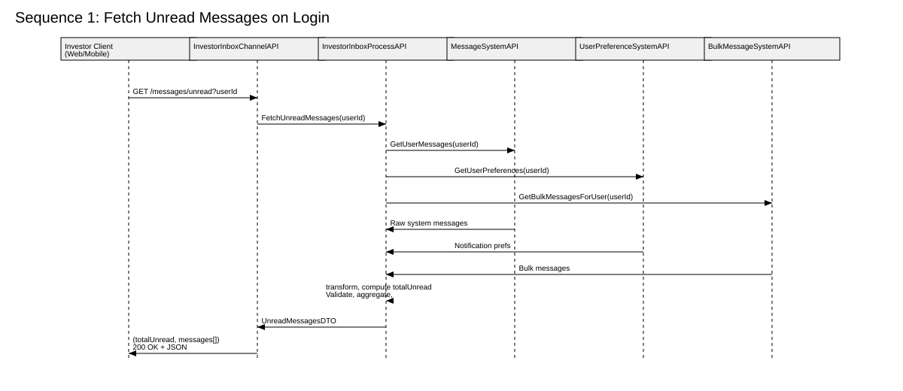
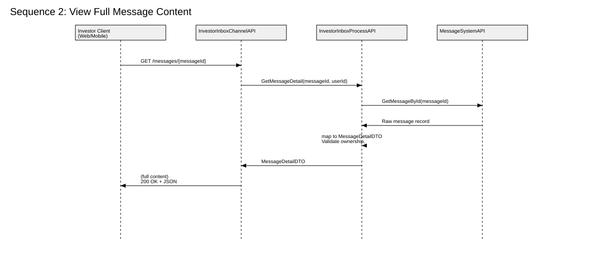
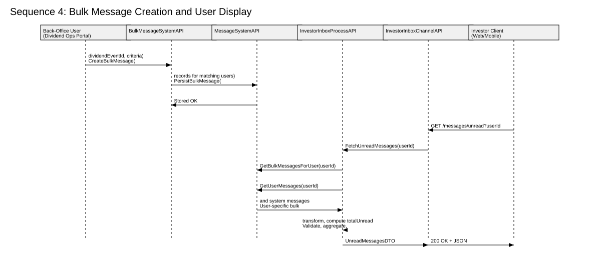
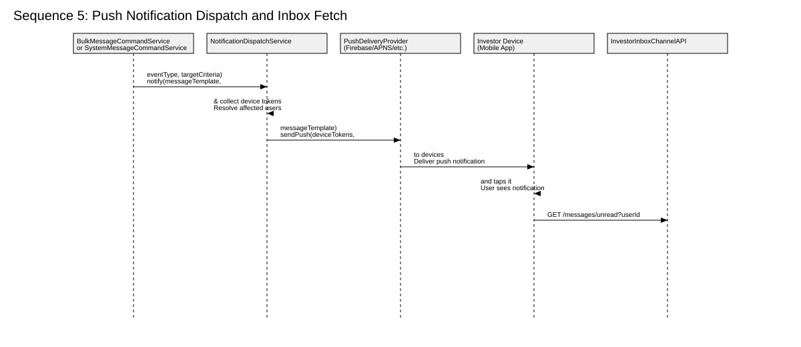

Sequence Diagrams – Message Inbox Low-Level Design (LLD)¶
This section describes the runtime behaviour of the Message Inbox solution using sequence diagrams.
It uses concrete component names so developers can map them directly to services and APIs.
Components referenced:
- Investor Client (Web/Mobile) – the authenticated user interface (browser or mobile app).
- InvestorInboxChannelAPI – the channel-facing API layer exposing REST endpoints to clients.
- InvestorInboxProcessAPI – the process layer responsible for orchestration, validation, transformation, and unread count computation.
- MessageSystemAPI – system API that exposes raw message data (system + persisted bulk messages).
- UserPreferenceSystemAPI – system API for user notification preferences and localisation settings.
- BulkMessageSystemAPI – system API that stores and serves bulk messages addressed to many users.
- (Optional) PushNotificationService – external service used by the platform to send push notifications to devices.
1️⃣ Sequence: Fetch Unread Messages on Login¶

Goal: When the user logs in or opens the inbox, the client retrieves all unread messages (system + bulk), plus the totalUnread count.
Flow (Step-by-Step):
-
Investor Client (Web/Mobile)
Sends a request to fetch unread messages:GET /messages/unread?userId={userId}to InvestorInboxChannelAPI. -
InvestorInboxChannelAPI
Forwards the request to InvestorInboxProcessAPI using an internal call such as:FetchUnreadMessages(userId) -
InvestorInboxProcessAPI → MessageSystemAPI
Calls:GetUserMessages(userId)to retrieve all user-specific system messages (e.g. address changes, corporate actions). -
InvestorInboxProcessAPI → UserPreferenceSystemAPI
Calls:GetUserPreferences(userId)to retrieve user preferences (e.g. notification settings, locale, time zone). -
InvestorInboxProcessAPI → BulkMessageSystemAPI
Calls:GetBulkMessagesForUser(userId)to get bulk messages relevant to this user (e.g. dividend events, portfolio-wide updates). -
System APIs → InvestorInboxProcessAPI
MessageSystemAPIreturns raw system messages.UserPreferenceSystemAPIreturns user preferences.BulkMessageSystemAPIreturns raw bulk messages filtered for this user. -
InvestorInboxProcessAPI (internal processing)
Validates all messages (required fields, ownership, timestamp formats). Aggregates system and bulk messages into a unified list. Applies transformations:- Localises timestamps using user preferences.
- Maps backend fields to the MessageSummary DTO.
Computes
totalUnreadby counting messages withstatus = unread.Optionally determines which messages should set
pushNotification = true. -
InvestorInboxProcessAPI → InvestorInboxChannelAPI
Returns a DTO such as:UnreadMessagesDTO { totalUnread, messages[] } -
InvestorInboxChannelAPI → Investor Client
Responds with:200 OK+ JSON (totalUnread,messages[]) -
Investor Client (Web/Mobile)
Caches themessageIds and summary data locally (for fast rendering and offline support). Displays the unread badge/count and message list in the inbox UI.
2️⃣ Sequence: View Full Message Content¶

Goal: When the user taps/clicks a message in the inbox, the client retrieves the full message content.
Flow (Step-by-Step):
-
Investor Client (Web/Mobile)
Sends:GET /messages/{messageId}to InvestorInboxChannelAPI. -
InvestorInboxChannelAPI
Calls InvestorInboxProcessAPI:GetMessageDetail(messageId, userId) -
InvestorInboxProcessAPI → MessageSystemAPI
Calls:GetMessageById(messageId)to retrieve the raw message record. -
MessageSystemAPI → InvestorInboxProcessAPI
Returns the message entity, including ownership and all raw fields. -
InvestorInboxProcessAPI (internal processing)
-
Validates that the
messageIdbelongs to the currentuserId. -
Applies transformation/mapping:
- Raw entity → MessageDetailDTO (title, full content, type, category, actions, pushNotification flag, timestamp).
-
Enforces any business rules (e.g. hide certain fields based on user role/preferences if needed).
-
InvestorInboxProcessAPI → InvestorInboxChannelAPI
Returns:MessageDetailDTO -
InvestorInboxChannelAPI → Investor Client
Responds with:200 OK+ JSON (full message content) -
Investor Client (Web/Mobile)
- Renders full message content screen.
- May optimistically update local state to treat this message as “viewed”.
3️⃣ Sequence: Mark Message as Read & Sync Count¶
Goal: When the user has read a message, the client marks it as read so that unread counts stay consistent across devices.
Flow (Step-by-Step):
-
Investor Client (Web/Mobile)
Sends:PATCH /messages/{messageId}/readto InvestorInboxChannelAPI. -
InvestorInboxChannelAPI
Calls InvestorInboxProcessAPI:MarkMessageRead(messageId, userId) -
InvestorInboxProcessAPI → MessageSystemAPI
Calls:UpdateMessageReadFlag(messageId, userId)to persist the read status in the underlying message store. -
MessageSystemAPI → InvestorInboxProcessAPI
Returns a success result (e.g.Update OK). -
InvestorInboxProcessAPI (internal processing)
-
Optionally recalculates
unreadCountfor this user (or uses a cached counter that decrements by 1). -
Ensures that the change will be reflected in future calls to
/messages/unread. -
InvestorInboxProcessAPI → InvestorInboxChannelAPI
Returns: Either no body (204 No Content), or a small DTO with the newunreadCount. -
InvestorInboxChannelAPI → Investor Client
Responds with:204 No Content
or
200 OK+ JSON with updated unread count. -
Investor Client (Web/Mobile)
- Updates the local cache to mark this message as
read. - Updates the badge/unread count in the UI.
- On next login (or on another device), the updated status will be fetched from the backend and stay consistent.
4️⃣ Sequence: Bulk Message Creation and Later Display¶

Goal: Model how a bulk message (e.g. dividend notification) is created for many users and later appears in each user’s inbox.
4.1 Bulk Message Creation (Back-Office)¶
-
Back-Office User (Dividend Ops Portal)
Uses an internal portal to create a bulk message for a corporate event: e.g. “Dividend applied for Event X to eligible holders”. -
Dividend Ops Portal → BulkMessageSystemAPI
Sends something like:CreateBulkMessage(dividendEventId, criteria)
wherecriteriaidentifies which investors/users should receive it. -
BulkMessageSystemAPI → MessageSystemAPI
- Derives the list of affected
userIds. -
Persists bulk message records linked to those users (or stores a reference + targeting rules).
-
MessageSystemAPI → BulkMessageSystemAPI
Confirms persistence of bulk message entries:Stored OK.
At this stage, messages are available in backend storage, but users haven’t pulled them yet.
4.2 Bulk Message Delivery to Individual User¶
-
Investor Client (Web/Mobile)
Later, when an investor logs in or opens their inbox, it calls:GET /messages/unread?userId={userId}to InvestorInboxChannelAPI. -
InvestorInboxChannelAPI → InvestorInboxProcessAPI
Calls:FetchUnreadMessages(userId) -
InvestorInboxProcessAPI → BulkMessageSystemAPI
Calls:GetBulkMessagesForUser(userId)to get just the bulk messages relevant to this user. -
InvestorInboxProcessAPI → MessageSystemAPI
Calls:GetUserMessages(userId)to fetch user-specific system messages. -
BulkMessageSystemAPI & MessageSystemAPI → InvestorInboxProcessAPI
Return: User-specific bulk messages. and User-specific system messages. -
InvestorInboxProcessAPI (internal processing)
Merges and de-duplicates system and bulk messages. Validates, transforms, and maps toMessageSummaryDTOs. ComputestotalUnread. Applies any channel-specific or business rules (e.g., sort by timestamp descending). -
InvestorInboxProcessAPI → InvestorInboxChannelAPI
Returns:UnreadMessagesDTOcontainingtotalUnreadandmessages[]. -
InvestorInboxChannelAPI → Investor Client
Returns:200 OK+ JSON. -
Investor Client (Web/Mobile)
Renders bulk and system messages together in the inbox. Indicates unread status and, if applicable, anyactionslike “download statement”.
5️⃣ Sequence: Push Notification Dispatch → User Inbox Fetch¶

Goal: When a bulk message or system message is created by back-office systems, push notifications are dispatched to affected investors. Once a user taps the notification on their device, the app pulls fresh unread messages from the inbox via the Channel API.
Flow (Step-by-Step):
-
BulkMessageCommandService OR SystemMessageCommandService
Triggers a notification dispatch:notify(messageTemplate, eventType, targetCriteria)(e.g., dividend applied to eligible holders) -
NotificationDispatchService (internal)
Determines affected investors based on targetCriteria Resolves device tokens for all impacted users Prepares a short notification payload using messageTemplate
-
NotificationDispatchService → PushDeliveryProvider
Sends:GetBulkMessagesForUser(userId)to a provider such as Firebase, APNS, or Azure Notification Hubs -
InvestorInboxProcessAPI → MessageSystemAPI
Delivers push notification to each registered device Device OS displays the notification to the user -
Investor Device (Mobile App)
When the user taps the push notification: App opens message inbox UI -
Investor Device → InvestorInboxChannelAPI
Sends: 'GET /messages/unread?userId={userId}` to fetch fresh unread messages, ensuring the latest persisted bulk/system messages are visible -
InvestorInboxChannelAPI → InvestorInboxProcessAPI
Internally executesFetchUnreadMessages(userId)(integration + transformation logic described in Sequence 1) -
InvestorInboxProcessAPI → InvestorInboxChannelAPI → Investor Device
Responds with the refreshed inbox state:200 OK + JSON (totalUnread, messages[]) -
Investor Device (Mobile App)
Displays messages with correct unread badges
User is now aligned with the backend state
How Developers Should Use These Diagrams¶
- Treat InvestorInboxChannelAPI, InvestorInboxProcessAPI, MessageSystemAPI, UserPreferenceSystemAPI, and BulkMessageSystemAPI as concrete services or bounded contexts.
- Use the sequence diagrams to:
- Implement method signatures, DTOs, and orchestration logic.
- Ensure that read/unread status, bulk message handling, and push notification decisions are implemented in the InvestorInboxProcessAPI.
- Use the MessageSummary and MessageDetail models from the API spec to shape responses in the Channel API layer.
These diagrams, together with the OpenAPI specification, Functional Notes, Assumptions, and Developer Notes, form a complete Low-Level Design (LLD) for the Message Inbox feature.